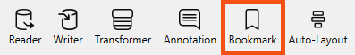
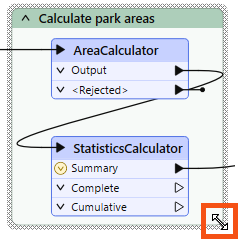
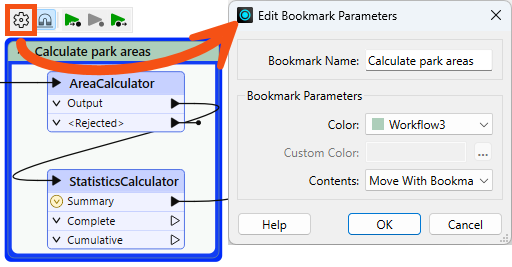
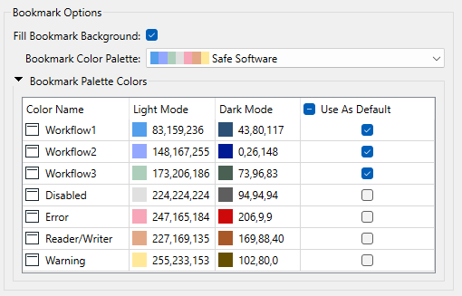
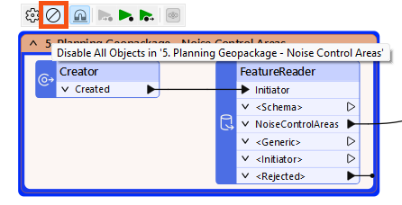
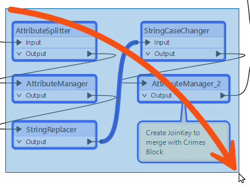
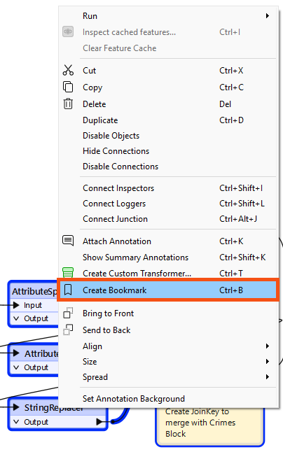
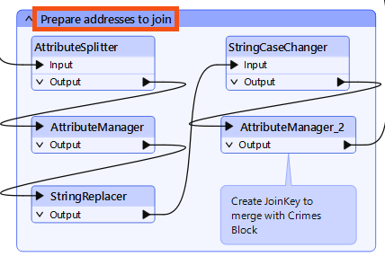
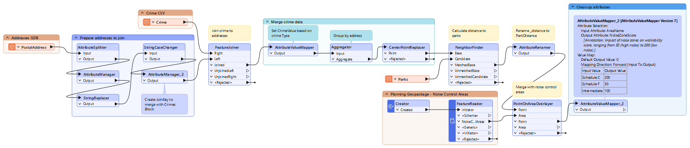

If you create a bookmark while objects are selected, the bookmark automatically expands to include those items.
After completing this lesson, you’ll be able to:
In this lesson, you will:
Like its real-world namesake, a bookmark is a means of putting a marker down for easy access.
With FME, the bookmark covers an area of the workspace that usually carries out a specific task, so a user can pick it out of a broader set of transformers and move to it with relative ease.
Bookmarks make your workspace more straightforward to understand and navigate.
To add a bookmark, click the Bookmark icon on the toolbar.

Whereas a traditional bookmark marks a single page in a book, an FME bookmark can cover a wide canvas area. You can divide a single workspace into different sections by applying multiple bookmarks.
If you create a bookmark while objects are selected, the bookmark automatically expands to include those items.
To resize a bookmark, hover over a corner or edge and drag the cursor to change its size or shape.

Bookmark Properties
Click the cogwheel icon on a bookmark header to open the bookmark properties dialog:

Here, you can change the bookmark's name and color and decide whether the contents will move (more on that later).
You can set bookmark colors to an existing color palette or use custom colors. Additionally, you can create customized palettes by going to Utilities > FME Options... > Appearance:

You can use the context (right-click) menu for a bookmark or the mini-toolbar icon to disable all its objects, making it useful for testing purposes:


Jennifer has annotated her walkability workspace and now wants to add bookmarks to give it a clear visual hierarchy. She needs to group related transformers into sections so she and her colleagues can navigate the workspace more easily.
In this exercise, you will:
The group of attribute management transformers near the beginning of the workspace is a good candidate for a first bookmark, as they all prepare the address data before it is ready to join.


Prepare addresses to join, then press Enter.
Add bookmarks to group the remaining transformers in the workspace. Use the following guidelines to decide how to group them:
Once complete, your workspace should look something like this:
